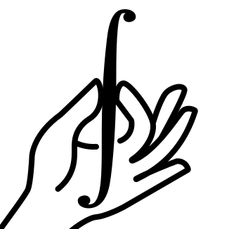

<!DOCTYPE html>
<html lang="ru">
<head>
    <meta charset="UTF-8">
	<link href="test1.css" rel="stylesheet" type="text/css"/>
    <meta name="viewport" content="width=device-width, initial-scale=1.0">
    <title>BARINOV</title>
	<link href="https://fonts.cdnfonts.com/css/sf-pro-display" rel="stylesheet">
	<link rel="shortcut icon" href="image/logo.svg" type="image/x-icon">
	<link rel="stylesheet" href="https://cdnjs.cloudflare.com/ajax/libs/font-awesome/4.7.0/css/font-awesome.min.css">
	<link rel="stylesheet" href="https://cdnjs.cloudflare.com/ajax/libs/font-awesome/4.7.0/css/font-awesome.min.css">
	<link rel="stylesheet" href="https://cdnjs.cloudflare.com/ajax/libs/font-awesome/4.7.0/css/font-awesome.min.css">
	<link rel="shortcut icon" href="../assets/ico/favicon.ico">
	<link rel="stylesheet" href="../assets/css/site.css">
	<link rel="stylesheet" href="../assets/css/pygments.css">
	<link rel="stylesheet" href="../assets/font-awesome/css/font-awesome.css">
	<link rel="stylesheet" href="/lib/w3schools30.css">
	<link rel="stylesheet" href="/lib/codemirror.css">
	<link rel="stylesheet" href="/lib/w3schools30.css">
	<link rel="stylesheet" href="https://site-assets.fontawesome.com/releases/v6.4.0/css/sharp-solid.css">
	<link rel="stylesheet" href="https://site-assets.fontawesome.com/releases/v6.4.0/css/sharp-regular.css">
	<link rel="stylesheet" href="https://site-assets.fontawesome.com/releases/v6.4.0/css/sharp-light.css">
	<link rel="stylesheet" href="/lib/codemirror.css">
	<link rel="preconnect" href="https://fonts.googleapis.com">
	<link rel="preconnect" href="https://fonts.gstatic.com" crossorigin="">
	<link href="https://fonts.googleapis.com/css?family=Rubik:300,400,500&amp;display=swap" rel="stylesheet" media="all">
	<link href="shrek.ttf" rel="stylesheet" media="all">
	<script id="MathJax-script" async src="https://cdn.jsdelivr.net/npm/mathjax@3/es5/tex-mml-chtml.js"></script>
	<script src="https://polyfill.io/v3/polyfill.min.js?features=es6"></script>
	<script id="MathJax-script" async src="https://cdn.jsdelivr.net/npm/mathjax@3/es5/tex-mml-chtml.js"></script>
	<link rel="stylesheet" href="https://cdn.jsdelivr.net/npm/katex@0.11.1/dist/katex.min.css" integrity="sha384-zB1R0rpPzHqg7Kpt0Aljp8JPLqbXI3bhnPWROx27a9N0Ll6ZP/+DiW/UqRcLbRjq" crossorigin="anonymous">
	<script defer src="https://cdn.jsdelivr.net/npm/katex@0.11.1/dist/katex.min.js" integrity="sha384-y23I5Q6l+B6vatafAwxRu/0oK/79VlbSz7Q9aiSZUvyWYIYsd+qj+o24G5ZU2zJz" crossorigin="anonymous"></script>
	<script defer src="https://cdn.jsdelivr.net/npm/katex@0.11.1/dist/contrib/auto-render.min.js" integrity="sha384-kWPLUVMOks5AQFrykwIup5lo0m3iMkkHrD0uJ4H5cjeGihAutqP0yW0J6dpFiVkI" crossorigin="anonymous" onload="renderMathInElement(document.body);"></script>
</head>
<body>

</body></html></br></br></br></br>
<div class="left-menu">
  <a href="home.html">Главная</a></br></br>
  <a href="uch.html">Учебник</a></a></br></br>
  <a href="zadach.html">Задачник</a></a></br></br>
  <a href="lit.html">Литература</a></a></br></br>
  <a href="vid.html">Видеоуроки</a></a></br></br>
  <a href="net.html">Сети</a></a></br></br>
</div>

<div class="main">
		    <details class="details">
			<summary class="details__title1">§1. Производная функции</summary>
			
			<div class="details__content">
				<div style="width: 100%">
				<div id="u">
				 <p style=" margin-left: 30px">Производная</i> - <b>скорость изменения</b> функции. <br>Её значение в каждой точке равно угловому коэффициенту касательной, проведенной к изначальному графику в этой точке. Определение производной такое $$ f'(x) = \lim_{\Delta x \to 0} \frac{f(x_0 + \Delta x) - f(x_0)}{\Delta x} $$
				Данная формула является фундаментом для вывода всех формул производных функции. Также нужно понимать запись <math xmlns="http://www.w3.org/1998/Math/MathML">  <msup>    <mi>y</mi>    <mo data-mjx-alternate="1">&#x2032;</mo>  </msup>  <mo>=</mo>  <mfrac>    <mrow>      <mi>d</mi>      <mi>y</mi>    </mrow>    <mrow>      <mi>d</mi>      <mi>x</mi>    </mrow>  </mfrac></math>, которая по сути является более короткой записью первой, но именно из этого уравнения выводится дифференциал функции, который понадобится нам при нахождении интегралов. <b>Дифференциал функции:</b> <math xmlns="http://www.w3.org/1998/Math/MathML">  <mi>d</mi>  <mi>y</mi>  <mo>=</mo>  <msup>    <mi>y</mi>    <mo data-mjx-alternate="1">&#x2032;</mo>  </msup>  <mo>&#x22C5;</mo>  <mi>d</mi>  <mi>x</mi></math>.</p>
				
				</div>
				</div>
				<div id="u1">
				 <p style="font-size: 19px;">Производная</i> - <b>скорость изменения</b> функции. <br>Её значение в каждой точке равно угловому коэффициенту касательной, проведенной к изначальному графику в этой точке. Определение производной такое $$ f'(x) = \lim_{\Delta x \to 0} \frac{f(x_0 + \Delta x) - f(x_0)}{\Delta x} $$
					Данная формула является фундаментом для вывода всех формул производных функции. Также нужно понимать запись <math xmlns="http://www.w3.org/1998/Math/MathML">  <msup>    <mi>y</mi>    <mo data-mjx-alternate="1">&#x2032;</mo>  </msup>  <mo>=</mo>  <mfrac>    <mrow>      <mi>d</mi>      <mi>y</mi>    </mrow>    <mrow>      <mi>d</mi>      <mi>x</mi>    </mrow>  </mfrac></math>, которая по сути является более короткой записью первой, но именно из этого уравнения выводится дифференциал функции, который понадобится нам при нахождении интегралов. <b>Дифференциал функции:</b> <math xmlns="http://www.w3.org/1998/Math/MathML">  <mi>d</mi>  <mi>y</mi>  <mo>=</mo>  <msup>    <mi>y</mi>    <mo data-mjx-alternate="1">&#x2032;</mo>  </msup>  <mo>&#x22C5;</mo>  <mi>d</mi>  <mi>x</mi></math>.</p>
				
			
				</div>

			</br></br></br></br></br>
			</div>
		</details>
		<details class="details">
			<summary class="details__title1">§2. Интегрирование по частям</summary>
			
			<div class="details__content">
				<div style="width: 100%">
				<div id="u" >
				<p>
					Метод интегрирования по частям является одним из важных и базовых инструментов для нахождения интегралов. Для того чтобы понять, откуда взялась формула, давайте выведем ее. Итак, мы знам, что для производных работает правило <math xmlns="http://www.w3.org/1998/Math/MathML">  <mo stretchy="false">(</mo>  <mi>f</mi>  <mo>&#x22C5;</mo>  <mi>g</mi>  <msup>    <mo stretchy="false">)</mo>    <mo data-mjx-alternate="1">&#x2032;</mo>  </msup>  <mo>=</mo>  <msup>    <mi>f</mi>    <mo data-mjx-alternate="1">&#x2032;</mo>  </msup>  <mi>g</mi>  <mo>+</mo>  <msup>    <mi>g</mi>    <mo data-mjx-alternate="1">&#x2032;</mo>  </msup>  <mi>f</mi></math>, аналогичное правило есть и для дифференциалов:
					<math xmlns="http://www.w3.org/1998/Math/MathML">  <mi>d</mi>  <mo stretchy="false">(</mo>  <mi>f</mi>  <mo>&#x22C5;</mo>  <mi>g</mi>  <mo stretchy="false">)</mo>  <mo>=</mo>  <mi>f</mi>  <mo>&#x22C5;</mo>  <mi>d</mi>  <mi>g</mi>  <mo>+</mo>  <mi>g</mi>  <mo>&#x22C5;</mo>  <mi>d</mi>  <mi>f</mi></math>. Теперь "накинем" с обеих сторон интегралы и получим <math xmlns="http://www.w3.org/1998/Math/MathML">  <mo data-mjx-texclass="OP">&#x222B;</mo>  <mi>d</mi>  <mo stretchy="false">(</mo>  <mi>f</mi>  <mo>&#x22C5;</mo>  <mi>g</mi>  <mo stretchy="false">)</mo>  <mo>=</mo>  <mo data-mjx-texclass="OP">&#x222B;</mo>  <mo stretchy="false">(</mo>  <mi>f</mi>  <mo>&#x22C5;</mo>  <mi>d</mi>  <mi>g</mi>  <mo>+</mo>  <mi>g</mi>  <mo>&#x22C5;</mo>  <mi>d</mi>  <mi>f</mi>  <mo stretchy="false">)</mo></math>.
					По факту слева находится <math xmlns="http://www.w3.org/1998/Math/MathML">  <mo data-mjx-texclass="OP">&#x222B;</mo>  <mn>1</mn>  <mi>d</mi>  <mo stretchy="false">(</mo>  <mi>f</mi>  <mo>&#x22C5;</mo>  <mi>g</mi>  <mo stretchy="false">)</mo></math>, то есть этот интеграл будет равен просто <math xmlns="http://www.w3.org/1998/Math/MathML">  <mi>f</mi>  <mo>&#x22C5;</mo>  <mi>g</mi></math>, а значит наше равенство будет следующим: <math xmlns="http://www.w3.org/1998/Math/MathML">  <mi>f</mi>  <mo>&#x22C5;</mo>  <mi>g</mi>  <mo>=</mo>  <mo data-mjx-texclass="OP">&#x222B;</mo>  <mi>f</mi>  <mstyle scriptlevel="0">    <mspace width="0.167em"></mspace>  </mstyle>  <mi>d</mi>  <mi>g</mi>  <mo>+</mo>  <mo data-mjx-texclass="OP">&#x222B;</mo>  <mi>g</mi>  <mstyle scriptlevel="0">    <mspace width="0.167em"></mspace>  </mstyle>  <mi>d</mi>  <mi>f</mi></math>. Отсюда получаем формулу <math xmlns="http://www.w3.org/1998/Math/MathML">  <mo data-mjx-texclass="OP">&#x222B;</mo>  <mi>f</mi>  <mstyle scriptlevel="0">    <mspace width="0.167em"></mspace>  </mstyle>  <mi>d</mi>  <mi>g</mi>  <mo>=</mo>  <mi>f</mi>  <mo>&#x22C5;</mo>  <mi>g</mi>  <mo>&#x2212;</mo>  <mo data-mjx-texclass="OP">&#x222B;</mo>  <mi>g</mi>  <mstyle scriptlevel="0">    <mspace width="0.167em"></mspace>  </mstyle>  <mi>d</mi>  <mi>f</mi></math>.
				</p>
					</br>
				<p>
					<h3>Итоговая формула: </h3>
					$$
					\int f \, dg = f \cdot g - \int g \, df
					$$
				</p>
					</br></br>
				<p>
					Закрепим полученные знания на практике.</br></br>
					<b><i>Задача.</i></b> Посчитайте неопределенный интеграл <math xmlns="http://www.w3.org/1998/Math/MathML">  <mo data-mjx-texclass="OP">&#x222B;</mo>  <msup>    <mi>x</mi>    <mn>2</mn>  </msup>  <mi>sin</mi>  <mo data-mjx-texclass="NONE">&#x2061;</mo>  <mi>x</mi>  <mstyle scriptlevel="0">    <mspace width="0.167em"></mspace>  </mstyle>  <mi>d</mi>  <mi>x</mi></math>.
				</br>
					<i>Решение.</i>
				</br> <math xmlns="http://www.w3.org/1998/Math/MathML">  <mo data-mjx-texclass="OP">&#x222B;</mo>  <munder>    <mrow data-mjx-texclass="OP">      <munder>        <msup>          <mi>x</mi>          <mn>2</mn>        </msup>        <mo>&#x23DF;</mo>      </munder>    </mrow>    <mrow data-mjx-texclass="ORD">      <mi>f</mi>    </mrow>  </munder>  <munder>    <mrow data-mjx-texclass="OP">      <munder>        <mrow>          <mi>sin</mi>          <mo data-mjx-texclass="NONE">&#x2061;</mo>          <mi>x</mi>          <mstyle scriptlevel="0">            <mspace width="0.167em"></mspace>          </mstyle>          <mi>d</mi>          <mi>x</mi>        </mrow>        <mo>&#x23DF;</mo>      </munder>    </mrow>    <mrow data-mjx-texclass="ORD">      <mi>d</mi>      <mi>g</mi>    </mrow>  </munder>  <mo>=</mo></math>
					<math xmlns="http://www.w3.org/1998/Math/MathML">  <mrow data-mjx-texclass="INNER">    <mo data-mjx-texclass="OPEN">[</mo>    <mtable displaystyle="true" columnalign="right left right left" columnspacing="0em 2em 0em" rowspacing="3pt">      <mtr>        <mtd>          <mi>d</mi>          <mi>f</mi>        </mtd>        <mtd>          <mi></mi>          <mo>=</mo>          <mn>2</mn>          <mi>x</mi>          <mstyle scriptlevel="0">            <mspace width="0.167em"></mspace>          </mstyle>          <mi>d</mi>          <mi>x</mi>          <mo>,</mo>        </mtd>        <mtd>          <mstyle scriptlevel="0">            <mspace width="1em"></mspace>          </mstyle>          <mi>d</mi>          <mi>g</mi>        </mtd>        <mtd>          <mi></mi>          <mo>=</mo>          <mi>sin</mi>          <mo data-mjx-texclass="NONE">&#x2061;</mo>          <mi>x</mi>          <mstyle scriptlevel="0">            <mspace width="0.167em"></mspace>          </mstyle>          <mi>d</mi>          <mi>x</mi>          <mo>,</mo>        </mtd>      </mtr>      <mtr>        <mtd>          <mi>f</mi>        </mtd>        <mtd>          <mi></mi>          <mo>=</mo>          <msup>            <mi>x</mi>            <mn>2</mn>          </msup>          <mo>,</mo>        </mtd>        <mtd>          <mstyle scriptlevel="0">            <mspace width="1em"></mspace>          </mstyle>          <mi>g</mi>        </mtd>        <mtd>          <mi></mi>          <mo>=</mo>          <mo>&#x2212;</mo>          <mi>cos</mi>          <mo data-mjx-texclass="NONE">&#x2061;</mo>          <mi>x</mi>          <mo>.</mo>        </mtd>      </mtr>    </mtable>    <mo data-mjx-texclass="CLOSE">]</mo>  </mrow></math>
					<math xmlns="http://www.w3.org/1998/Math/MathML">  <mo>=</mo>  <mo>&#x2212;</mo>  <msup>    <mi>x</mi>    <mn>2</mn>  </msup>  <mi>cos</mi>  <mo data-mjx-texclass="NONE">&#x2061;</mo>  <mi>x</mi>  <mo>&#x2212;</mo>  <mo data-mjx-texclass="OP">&#x222B;</mo>  <mo stretchy="false">(</mo>  <mo>&#x2212;</mo>  <mn>2</mn>  <mi>x</mi>  <mi>cos</mi>  <mo data-mjx-texclass="NONE">&#x2061;</mo>  <mi>x</mi>  <mo stretchy="false">)</mo>  <mstyle scriptlevel="0">    <mspace width="0.167em"></mspace>  </mstyle>  <mi>d</mi>  <mi>x</mi>  <mo>=</mo></math>
					<math xmlns="http://www.w3.org/1998/Math/MathML">  <mo>&#x2212;</mo>  <msup>    <mi>x</mi>    <mn>2</mn>  </msup>  <mi>cos</mi>  <mo data-mjx-texclass="NONE">&#x2061;</mo>  <mi>x</mi>  <mo>+</mo>  <mn>2</mn>  <mo data-mjx-texclass="OP">&#x222B;</mo>  <munder>    <mrow data-mjx-texclass="OP">      <munder>        <mi>x</mi>        <mo>&#x23DF;</mo>      </munder>    </mrow>    <mrow data-mjx-texclass="ORD">      <mi>f</mi>    </mrow>  </munder>  <munder>    <mrow data-mjx-texclass="OP">      <munder>        <mrow>          <mi>cos</mi>          <mo data-mjx-texclass="NONE">&#x2061;</mo>          <mi>x</mi>          <mstyle scriptlevel="0">            <mspace width="0.167em"></mspace>          </mstyle>          <mi>d</mi>          <mi>x</mi>        </mrow>        <mo>&#x23DF;</mo>      </munder>    </mrow>    <mrow data-mjx-texclass="ORD">      <mi>d</mi>      <mi>g</mi>    </mrow>  </munder>  <mo>=</mo></math>
					<math xmlns="http://www.w3.org/1998/Math/MathML">  <mrow data-mjx-texclass="INNER">    <mo data-mjx-texclass="OPEN">[</mo>    <mtable displaystyle="true" columnalign="right left right left" columnspacing="0em 2em 0em" rowspacing="3pt">      <mtr>        <mtd>          <mi>d</mi>          <mi>f</mi>        </mtd>        <mtd>          <mi></mi>          <mo>=</mo>          <mi>d</mi>          <mi>x</mi>          <mo>,</mo>        </mtd>        <mtd>          <mstyle scriptlevel="0">            <mspace width="1em"></mspace>          </mstyle>          <mi>d</mi>          <mi>g</mi>        </mtd>        <mtd>          <mi></mi>          <mo>=</mo>          <mi>cos</mi>          <mo data-mjx-texclass="NONE">&#x2061;</mo>          <mi>x</mi>          <mstyle scriptlevel="0">            <mspace width="0.167em"></mspace>          </mstyle>          <mi>d</mi>          <mi>x</mi>          <mo>,</mo>        </mtd>      </mtr>      <mtr>        <mtd>          <mi>f</mi>        </mtd>        <mtd>          <mi></mi>          <mo>=</mo>          <mi>x</mi>          <mo>,</mo>        </mtd>        <mtd>          <mstyle scriptlevel="0">            <mspace width="1em"></mspace>          </mstyle>          <mi>g</mi>        </mtd>        <mtd>          <mi></mi>          <mo>=</mo>          <mi>sin</mi>          <mo data-mjx-texclass="NONE">&#x2061;</mo>          <mi>x</mi>          <mo>.</mo>        </mtd>      </mtr>    </mtable>    <mo data-mjx-texclass="CLOSE">]</mo>  </mrow></math>
					<math xmlns="http://www.w3.org/1998/Math/MathML">  <mo>=</mo>  <mo>&#x2212;</mo>  <msup>    <mi>x</mi>    <mn>2</mn>  </msup>  <mi>cos</mi>  <mo data-mjx-texclass="NONE">&#x2061;</mo>  <mi>x</mi>  <mo>+</mo>  <mn>2</mn>  <mrow data-mjx-texclass="INNER">    <mo data-mjx-texclass="OPEN">(</mo>    <mi>x</mi>    <mi>sin</mi>    <mo data-mjx-texclass="NONE">&#x2061;</mo>    <mi>x</mi>    <mo>&#x2212;</mo>    <mo data-mjx-texclass="OP">&#x222B;</mo>    <mi>sin</mi>    <mo data-mjx-texclass="NONE">&#x2061;</mo>    <mi>x</mi>    <mstyle scriptlevel="0">      <mspace width="0.167em"></mspace>    </mstyle>    <mi>d</mi>    <mi>x</mi>    <mo data-mjx-texclass="CLOSE">)</mo>  </mrow>  <mo>=</mo></math>
					<math xmlns="http://www.w3.org/1998/Math/MathML">  <mo>&#x2212;</mo>  <msup>    <mi>x</mi>    <mn>2</mn>  </msup>  <mi>cos</mi>  <mo data-mjx-texclass="NONE">&#x2061;</mo>  <mi>x</mi>  <mo>+</mo>  <mn>2</mn>  <mi>x</mi>  <mi>sin</mi>  <mo data-mjx-texclass="NONE">&#x2061;</mo>  <mi>x</mi>  <mo>+</mo>  <mn>2</mn>  <mi>cos</mi>  <mo data-mjx-texclass="NONE">&#x2061;</mo>  <mi>x</mi>  <mo>+</mo>  <mi>C</mi></math>
				</br></br><b>Ответ: </b><math xmlns="http://www.w3.org/1998/Math/MathML">  <mo>&#x2212;</mo>  <msup>    <mi>x</mi>    <mn>2</mn>  </msup>  <mi>cos</mi>  <mo data-mjx-texclass="NONE">&#x2061;</mo>  <mi>x</mi>  <mo>+</mo>  <mn>2</mn>  <mi>x</mi>  <mi>sin</mi>  <mo data-mjx-texclass="NONE">&#x2061;</mo>  <mi>x</mi>  <mo>+</mo>  <mn>2</mn>  <mi>cos</mi>  <mo data-mjx-texclass="NONE">&#x2061;</mo>  <mi>x</mi>  <mo>+</mo>  <mi>C</mi></math>

				</p>
				</div>
				
				</div>
				<div id="u1" style="font-size: 19px;">
				<p>
					Метод интегрирования по частям является одним из важных и базовых инструментов для нахождения интегралов. Для того чтобы понять, откуда взялась формула, давайте выведем ее. Итак, мы знам, что для производных работает правило <math xmlns="http://www.w3.org/1998/Math/MathML">  <mo stretchy="false">(</mo>  <mi>f</mi>  <mo>&#x22C5;</mo>  <mi>g</mi>  <msup>    <mo stretchy="false">)</mo>    <mo data-mjx-alternate="1">&#x2032;</mo>  </msup>  <mo>=</mo>  <msup>    <mi>f</mi>    <mo data-mjx-alternate="1">&#x2032;</mo>  </msup>  <mi>g</mi>  <mo>+</mo>  <msup>    <mi>g</mi>    <mo data-mjx-alternate="1">&#x2032;</mo>  </msup>  <mi>f</mi></math>, аналогичное правило есть и для дифференциалов:
					<math xmlns="http://www.w3.org/1998/Math/MathML">  <mi>d</mi>  <mo stretchy="false">(</mo>  <mi>f</mi>  <mo>&#x22C5;</mo>  <mi>g</mi>  <mo stretchy="false">)</mo>  <mo>=</mo>  <mi>f</mi>  <mo>&#x22C5;</mo>  <mi>d</mi>  <mi>g</mi>  <mo>+</mo>  <mi>g</mi>  <mo>&#x22C5;</mo>  <mi>d</mi>  <mi>f</mi></math>. Теперь "накинем" с обеих сторон интегралы и получим <math xmlns="http://www.w3.org/1998/Math/MathML">  <mo data-mjx-texclass="OP">&#x222B;</mo>  <mi>d</mi>  <mo stretchy="false">(</mo>  <mi>f</mi>  <mo>&#x22C5;</mo>  <mi>g</mi>  <mo stretchy="false">)</mo>  <mo>=</mo>  <mo data-mjx-texclass="OP">&#x222B;</mo>  <mo stretchy="false">(</mo>  <mi>f</mi>  <mo>&#x22C5;</mo>  <mi>d</mi>  <mi>g</mi>  <mo>+</mo>  <mi>g</mi>  <mo>&#x22C5;</mo>  <mi>d</mi>  <mi>f</mi>  <mo stretchy="false">)</mo></math>.
					По факту слева находится <math xmlns="http://www.w3.org/1998/Math/MathML">  <mo data-mjx-texclass="OP">&#x222B;</mo>  <mn>1</mn>  <mi>d</mi>  <mo stretchy="false">(</mo>  <mi>f</mi>  <mo>&#x22C5;</mo>  <mi>g</mi>  <mo stretchy="false">)</mo></math>, то есть этот интеграл будет равен просто <math xmlns="http://www.w3.org/1998/Math/MathML">  <mi>f</mi>  <mo>&#x22C5;</mo>  <mi>g</mi></math>, а значит наше равенство будет следующим: <math xmlns="http://www.w3.org/1998/Math/MathML">  <mi>f</mi>  <mo>&#x22C5;</mo>  <mi>g</mi>  <mo>=</mo>  <mo data-mjx-texclass="OP">&#x222B;</mo>  <mi>f</mi>  <mstyle scriptlevel="0">    <mspace width="0.167em"></mspace>  </mstyle>  <mi>d</mi>  <mi>g</mi>  <mo>+</mo>  <mo data-mjx-texclass="OP">&#x222B;</mo>  <mi>g</mi>  <mstyle scriptlevel="0">    <mspace width="0.167em"></mspace>  </mstyle>  <mi>d</mi>  <mi>f</mi></math>. Отсюда получаем формулу <math xmlns="http://www.w3.org/1998/Math/MathML">  <mo data-mjx-texclass="OP">&#x222B;</mo>  <mi>f</mi>  <mstyle scriptlevel="0">    <mspace width="0.167em"></mspace>  </mstyle>  <mi>d</mi>  <mi>g</mi>  <mo>=</mo>  <mi>f</mi>  <mo>&#x22C5;</mo>  <mi>g</mi>  <mo>&#x2212;</mo>  <mo data-mjx-texclass="OP">&#x222B;</mo>  <mi>g</mi>  <mstyle scriptlevel="0">    <mspace width="0.167em"></mspace>  </mstyle>  <mi>d</mi>  <mi>f</mi></math>.
				</p>
				<p>
					<h3>Итоговая формула: </h3>
					$$
					\int f \, dg = f \cdot g - \int g \, df
					$$
				</p>
				</br></br>
				<p>
					Закрепим полученные знания на практике.</br></br>
					<b><i>Задача.</i></b> Посчитайте неопределенный интеграл <math xmlns="http://www.w3.org/1998/Math/MathML">  <mo data-mjx-texclass="OP">&#x222B;</mo>  <msup>    <mi>x</mi>    <mn>2</mn>  </msup>  <mi>sin</mi>  <mo data-mjx-texclass="NONE">&#x2061;</mo>  <mi>x</mi>  <mstyle scriptlevel="0">    <mspace width="0.167em"></mspace>  </mstyle>  <mi>d</mi>  <mi>x</mi></math>.
				</br>
					<i>Решение.</i>
				</br> <math xmlns="http://www.w3.org/1998/Math/MathML">  <mo data-mjx-texclass="OP">&#x222B;</mo>  <munder>    <mrow data-mjx-texclass="OP">      <munder>        <msup>          <mi>x</mi>          <mn>2</mn>        </msup>        <mo>&#x23DF;</mo>      </munder>    </mrow>    <mrow data-mjx-texclass="ORD">      <mi>f</mi>    </mrow>  </munder>  <munder>    <mrow data-mjx-texclass="OP">      <munder>        <mrow>          <mi>sin</mi>          <mo data-mjx-texclass="NONE">&#x2061;</mo>          <mi>x</mi>          <mstyle scriptlevel="0">            <mspace width="0.167em"></mspace>          </mstyle>          <mi>d</mi>          <mi>x</mi>        </mrow>        <mo>&#x23DF;</mo>      </munder>    </mrow>    <mrow data-mjx-texclass="ORD">      <mi>d</mi>      <mi>g</mi>    </mrow>  </munder>  <mo>=</mo></math>
					<math xmlns="http://www.w3.org/1998/Math/MathML">  <mrow data-mjx-texclass="INNER">    <mo data-mjx-texclass="OPEN">[</mo>    <mtable displaystyle="true" columnalign="right left right left" columnspacing="0em 2em 0em" rowspacing="3pt">      <mtr>        <mtd>          <mi>d</mi>          <mi>f</mi>        </mtd>        <mtd>          <mi></mi>          <mo>=</mo>          <mn>2</mn>          <mi>x</mi>          <mstyle scriptlevel="0">            <mspace width="0.167em"></mspace>          </mstyle>          <mi>d</mi>          <mi>x</mi>          <mo>,</mo>        </mtd>        <mtd>          <mstyle scriptlevel="0">            <mspace width="1em"></mspace>          </mstyle>          <mi>d</mi>          <mi>g</mi>        </mtd>        <mtd>          <mi></mi>          <mo>=</mo>          <mi>sin</mi>          <mo data-mjx-texclass="NONE">&#x2061;</mo>          <mi>x</mi>          <mstyle scriptlevel="0">            <mspace width="0.167em"></mspace>          </mstyle>          <mi>d</mi>          <mi>x</mi>          <mo>,</mo>        </mtd>      </mtr>      <mtr>        <mtd>          <mi>f</mi>        </mtd>        <mtd>          <mi></mi>          <mo>=</mo>          <msup>            <mi>x</mi>            <mn>2</mn>          </msup>          <mo>,</mo>        </mtd>        <mtd>          <mstyle scriptlevel="0">            <mspace width="1em"></mspace>          </mstyle>          <mi>g</mi>        </mtd>        <mtd>          <mi></mi>          <mo>=</mo>          <mo>&#x2212;</mo>          <mi>cos</mi>          <mo data-mjx-texclass="NONE">&#x2061;</mo>          <mi>x</mi>          <mo>.</mo>        </mtd>      </mtr>    </mtable>    <mo data-mjx-texclass="CLOSE">]</mo>  </mrow></math>
					<math xmlns="http://www.w3.org/1998/Math/MathML">  <mo>=</mo>  <mo>&#x2212;</mo>  <msup>    <mi>x</mi>    <mn>2</mn>  </msup>  <mi>cos</mi>  <mo data-mjx-texclass="NONE">&#x2061;</mo>  <mi>x</mi>  <mo>&#x2212;</mo>  <mo data-mjx-texclass="OP">&#x222B;</mo>  <mo stretchy="false">(</mo>  <mo>&#x2212;</mo>  <mn>2</mn>  <mi>x</mi>  <mi>cos</mi>  <mo data-mjx-texclass="NONE">&#x2061;</mo>  <mi>x</mi>  <mo stretchy="false">)</mo>  <mstyle scriptlevel="0">    <mspace width="0.167em"></mspace>  </mstyle>  <mi>d</mi>  <mi>x</mi>  <mo>=</mo></math>
					<math xmlns="http://www.w3.org/1998/Math/MathML">  <mo>&#x2212;</mo>  <msup>    <mi>x</mi>    <mn>2</mn>  </msup>  <mi>cos</mi>  <mo data-mjx-texclass="NONE">&#x2061;</mo>  <mi>x</mi>  <mo>+</mo>  <mn>2</mn>  <mo data-mjx-texclass="OP">&#x222B;</mo>  <munder>    <mrow data-mjx-texclass="OP">      <munder>        <mi>x</mi>        <mo>&#x23DF;</mo>      </munder>    </mrow>    <mrow data-mjx-texclass="ORD">      <mi>f</mi>    </mrow>  </munder>  <munder>    <mrow data-mjx-texclass="OP">      <munder>        <mrow>          <mi>cos</mi>          <mo data-mjx-texclass="NONE">&#x2061;</mo>          <mi>x</mi>          <mstyle scriptlevel="0">            <mspace width="0.167em"></mspace>          </mstyle>          <mi>d</mi>          <mi>x</mi>        </mrow>        <mo>&#x23DF;</mo>      </munder>    </mrow>    <mrow data-mjx-texclass="ORD">      <mi>d</mi>      <mi>g</mi>    </mrow>  </munder>  <mo>=</mo></math>
					<math xmlns="http://www.w3.org/1998/Math/MathML">  <mrow data-mjx-texclass="INNER">    <mo data-mjx-texclass="OPEN">[</mo>    <mtable displaystyle="true" columnalign="right left right left" columnspacing="0em 2em 0em" rowspacing="3pt">      <mtr>        <mtd>          <mi>d</mi>          <mi>f</mi>        </mtd>        <mtd>          <mi></mi>          <mo>=</mo>          <mi>d</mi>          <mi>x</mi>          <mo>,</mo>        </mtd>        <mtd>          <mstyle scriptlevel="0">            <mspace width="1em"></mspace>          </mstyle>          <mi>d</mi>          <mi>g</mi>        </mtd>        <mtd>          <mi></mi>          <mo>=</mo>          <mi>cos</mi>          <mo data-mjx-texclass="NONE">&#x2061;</mo>          <mi>x</mi>          <mstyle scriptlevel="0">            <mspace width="0.167em"></mspace>          </mstyle>          <mi>d</mi>          <mi>x</mi>          <mo>,</mo>        </mtd>      </mtr>      <mtr>        <mtd>          <mi>f</mi>        </mtd>        <mtd>          <mi></mi>          <mo>=</mo>          <mi>x</mi>          <mo>,</mo>        </mtd>        <mtd>          <mstyle scriptlevel="0">            <mspace width="1em"></mspace>          </mstyle>          <mi>g</mi>        </mtd>        <mtd>          <mi></mi>          <mo>=</mo>          <mi>sin</mi>          <mo data-mjx-texclass="NONE">&#x2061;</mo>          <mi>x</mi>          <mo>.</mo>        </mtd>      </mtr>    </mtable>    <mo data-mjx-texclass="CLOSE">]</mo>  </mrow></math>
					<math xmlns="http://www.w3.org/1998/Math/MathML">  <mo>=</mo>  <mo>&#x2212;</mo>  <msup>    <mi>x</mi>    <mn>2</mn>  </msup>  <mi>cos</mi>  <mo data-mjx-texclass="NONE">&#x2061;</mo>  <mi>x</mi>  <mo>+</mo>  <mn>2</mn>  <mrow data-mjx-texclass="INNER">    <mo data-mjx-texclass="OPEN">(</mo>    <mi>x</mi>    <mi>sin</mi>    <mo data-mjx-texclass="NONE">&#x2061;</mo>    <mi>x</mi>    <mo>&#x2212;</mo>    <mo data-mjx-texclass="OP">&#x222B;</mo>    <mi>sin</mi>    <mo data-mjx-texclass="NONE">&#x2061;</mo>    <mi>x</mi>    <mstyle scriptlevel="0">      <mspace width="0.167em"></mspace>    </mstyle>    <mi>d</mi>    <mi>x</mi>    <mo data-mjx-texclass="CLOSE">)</mo>  </mrow>  <mo>=</mo></math>
					<math xmlns="http://www.w3.org/1998/Math/MathML">  <mo>&#x2212;</mo>  <msup>    <mi>x</mi>    <mn>2</mn>  </msup>  <mi>cos</mi>  <mo data-mjx-texclass="NONE">&#x2061;</mo>  <mi>x</mi>  <mo>+</mo>  <mn>2</mn>  <mi>x</mi>  <mi>sin</mi>  <mo data-mjx-texclass="NONE">&#x2061;</mo>  <mi>x</mi>  <mo>+</mo>  <mn>2</mn>  <mi>cos</mi>  <mo data-mjx-texclass="NONE">&#x2061;</mo>  <mi>x</mi>  <mo>+</mo>  <mi>C</mi></math>
				</br></br><b>Ответ: </b><math xmlns="http://www.w3.org/1998/Math/MathML">  <mo>&#x2212;</mo>  <msup>    <mi>x</mi>    <mn>2</mn>  </msup>  <mi>cos</mi>  <mo data-mjx-texclass="NONE">&#x2061;</mo>  <mi>x</mi>  <mo>+</mo>  <mn>2</mn>  <mi>x</mi>  <mi>sin</mi>  <mo data-mjx-texclass="NONE">&#x2061;</mo>  <mi>x</mi>  <mo>+</mo>  <mn>2</mn>  <mi>cos</mi>  <mo data-mjx-texclass="NONE">&#x2061;</mo>  <mi>x</mi>  <mo>+</mo>  <mi>C</mi></math>

				</p>
				</div>
			</div>
		</details>


</div>


<nav>
  <a href="" class="logo">BARINOV</a>
  
  <a href="uch.html" id="position">Учебник</a>
</nav>

	<div id="bottom-menu">
		<button><a href="home.html"></a></button>
		<button><a href="vid.html"></a></button>
		<button><a href="zadach.html"></a></button>
		<button><a href="lit.html"></a></button>
	</div>


</body>
</html>
